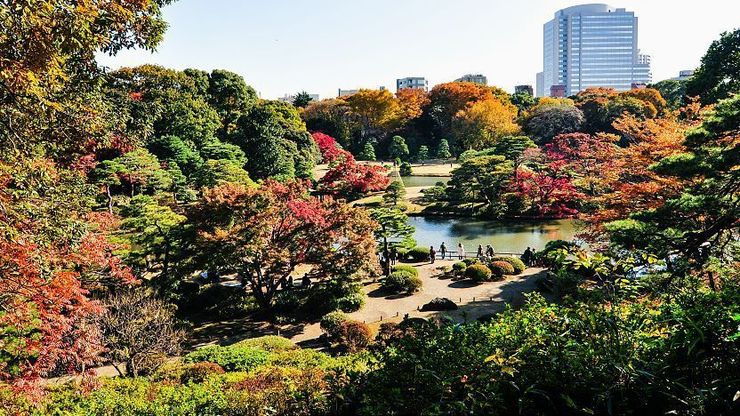

Japan
Region 1
Hokkaido
Hokkaido (北海道, Hokkaidō) is the second largest, northernmost and least developed of Japan's four main islands. Its weather is harsh in winter with lots of snowfall, below zero temperatures and frozen seas, while in summer it does not get as hot and humid as in the other parts of the country.
With its unspoiled nature, many national parks and rural landscapes, Hokkaido attracts many outdoor lovers, including skiers and snowboarders in the colder seasons and hikers, cyclists and campers from June to September.
Region 2
Tohoku
Expansive landscapes, rustic hot springs, epic festivals and rich traditions
The Tohoku Region (東北地方, Tōhoku Chihō, literally "North East Region") consists of six prefectures in the north of Japan's largest island, Honshu. It is well known for its countryside, mountains, lakes, hot springs, high-quality rice and rough winters. The Tohoku Region's Pacific coast was hit worst by the earthquake and tsunami of March 11, 2011.

Region 3
Kanto
Tokyo and the cultural and natural treasures just at its doorstep
The Kanto Region (関東, Kantō, literally "east of the border") contains Japan's largest plain and is very densely populated. The large metropolises of Tokyo and Yokohama are located in the Kanto Region which consists of seven prefectures.
Region 4
Osaka
Largest city of the Kinki Region
Osaka (大阪, Ōsaka) is Japan's second largest metropolitan area after Tokyo. It has been the economic powerhouse of the Kansai Region for many centuries. Osaka was formerly known as Naniwa. Before the Nara Period, when the capital used to be moved with the reign of each new emperor, Naniwa was once Japan's capital city, the first one ever known.
In the 16th century, Toyotomi Hideyoshi chose Osaka as the location for his castle, and the city may have become Japan's political capital if Tokugawa Ieyasu had not terminated the Toyotomi lineage after Hideyoshi's death and established his government in distant Edo (Tokyo).
Tokyo
Japan's capital and largest city
Tokyo (東京, Tōkyō) is Japan's capital and the world's most populous metropolis. It is also one of Japan's 47 prefectures, consisting of 23 central city wards and multiple cities, towns and villages west of the city center. The Izu and Ogasawara Islands are also part of Tokyo.
Prior to 1868, Tokyo was known as Edo. Previously a small castle town, Edo became Japan's political center in 1603 when Tokugawa Ieyasu established his feudal government there. A few decades later, Edo had grown into one of the world's largest cities. With the Meiji Restoration of 1868, the emperor and capital moved from Kyoto to Edo, which was renamed Tokyo ("Eastern Capital"). Large parts of Tokyo were destroyed in the Great Kanto Earthquake of 1923 and the air raids of 1945.
Today, Tokyo offers a seemingly unlimited choice of shopping, entertainment, culture and dining to its visitors. The city's history can be appreciated in districts such as Asakusa and in many excellent museums, historic temples and gardens. Contrary to common perception, Tokyo also offers a number of attractive green spaces in the city center and within relatively short train rides at its outskirts.

Rikugien in Northern Tokyo